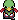

斷崖道路Cliff Route
- 地區
- 城都
- 種類
- 道路與野外
- 天氣
- 晴朗 30%・陰天 26%・下雨 10%・打雷 6%・下雪 12%・霧 16%
野生寶可夢
白天
| 寶可夢 | 等級 | 機率 |
|---|---|---|
 盔甲鳥 盔甲鳥 | 108-111 | 23.1% |
 天蠍 天蠍 | 108-111 | 23.1% |
 頓甲 頓甲 | 109-112 | 23.1% |
 天然鳥 | 108-111 | 15.4% |
 布魯皇 布魯皇 | 109-112 | 15.4% |
夜晚
| 寶可夢 | 等級 | 機率 |
|---|---|---|
| 天蠍 | 108-111 | 23.8% |
| 頓甲 | 109-112 | 23.8% |
 黑魯加 黑魯加 | 109-112 | 15.9% |
 黑暗鴉 黑暗鴉 | 109-112 | 15.9% |
 夢妖 夢妖 | 108-111 | 15.9% |
 幼基拉斯 幼基拉斯 | 111-112 | 4.76% 稀有 準傳說 |
百分比是該地圖、該時段每次生成野生寶可夢時抽到這一隻的機率。天氣若符合寶可夢的屬性，出現率會提高。